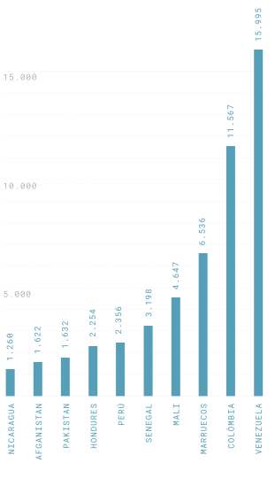
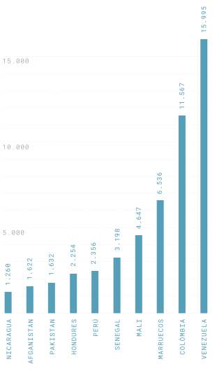

Segons diversos estudis, el col·lectiu de persones estrangeres a l’Estat espanyol està sobrerepresentat en els índexs de pobresa. La llista de dificultats i obstacles per aconseguir el que qualsevol persona necessita és llarga. Un nom estranger, el color de pell o la senzilla absència d’un DNI espanyol impossibiliten moltes vegades l’accés a un dels principals drets humans: l’habitatge.
Les persones i fons voltors propietaris al·legaran que persones sense papers, sense un contracte laboral i sovint sense un compte corrent al banc no tenen prou garanties per firmar un contracte com a llogateres. Alhora, la irregularitat no els permet tenir un contracte de treball ni, per tant, cotitzar per tenir algun dia una prestació d’atur o una pensió, de manera que el peix es mossega la cua: ni sostre ni feina garantits.
L’economia submergida és l’únic camí. Per tant, la llei d’estrangeria és la responsable i creadora d’aquesta economia informal que el mateix Estat diu combatre.
L’economia submergida és l’únic camí. Per tant, la llei d’estrangeria és la responsable i creadora d’aquesta economia informal que el mateix Estat diu combatre. Un altre peix que es mossega la cua. “La llei ens treu la possibilitat de tenir els mateixos drets que la resta de persones i ens deixa en uns llimbs legals durant almenys tres anys, durant els quals serem explotades treballant en negre. I, per sortir d’aquí, hem de fer de tot i més”, assegura Ana Isabel Ríos, una migrant colombiana que prefereix guardar l’anonimat pel risc al qual s’exposarà en denunciar la manera a través de la qual va aconseguir la residència.
Els recorreguts per “sortir d’aquí”, d’un forat negre inevitable, són diversos. El primer pas, imprescindible per a totes i que –tot i que hauria de ser ben senzill– sovint no està sent garantit per les administracions públiques, és l’empadronament. Aparèixer al registre del padró del municipi espanyol on la persona estrangera resideixi serà la garantia d’altres drets com la salut o l’educació de menors.
El dret a l’empadronament és la porta a la resta de drets. Per llei, tots els ajuntaments tenen l’obligació d’empadronar a tothom, també si viuen sota un pont o en un caixer automàtic.
El dret a l’empadronament, doncs, és la porta a la resta de drets –una porta que de vegades ja costa d’obrir. Per llei, tots els ajuntaments tenen l’obligació, a través de l’Oficina d’Atenció al Ciutadà, d’empadronar totes les persones que resideixin al seu municipi, també si viuen sota un pont o en un caixer automàtic, a través de la figura del “padró sense domicili fix”.
Molts consistoris, però, no compleixen la llei i exigeixen un contracte de lloguer o de propietat a l’hora d’empadronar-se. Aquesta falta de garanties d’un dret bàsic ha fet sorgir un mercat negre –un altre– on es pot comprar la possibilitat d’empadronar-se pagant fins a 500 euros anuals a persones nacionals espanyoles o estrangeres residents perquè t’empadronin a casa seva.
Hi ha diverses ONG, com la Creu Roja, o entitats i col·lectius de la mateixa població migrant organitzada, com Mujeres Pa’lante, que ofereixen assessorament perquè això no passi, però moltes vegades acaba sent inevitable. Sigui com sigui, l’objectiu de qualsevol migrant una vegada ha arribat a l’Estat espanyol és empadronar-se tan aviat com pugui, perquè és només aleshores, quan ja consti al padró, que començaran a acumular-se realment els dies, les setmanes i els anys que necessita per arribar a regularitzar-se de la manera més comuna: l’arrelament social.
L’arrelament social l’aconsegueixen aquelles persones que poden demostrar, a través del padró, que han viscut tres anys consecutius en territori espanyol.
L’arrelament social és una de les modalitats d’autorització temporal per viure i treballar a l’Estat espanyol durant un període de temps prorrogable. L’aconsegueixen aquelles persones que poden demostrar, a través del padró, que han viscut tres anys consecutius en territori espanyol i que compleixen altres requisits com l’obtenció d’un o diversos contractes de treball que sumin almenys trenta hores setmanals, l’absència d’antecedents penals, la realització de cursos de la llengua local –Castellana, catalana o eusquera– i un informe que demostri la seva integració social. La periodista colombiana Liza Roncancio, com milers de persones en situació irregular, ja reuneixen tot el que es necessita per dur a terme aquest arrelament, menys el contracte laboral.
Aquests contractes, com en el cas d’Eli González, s’acaben fent realitat “gràcies a persones de confiança que et fan el favor; d’altra manera, és molt difícil”, assegura la jove nicaragüenca. Roncancio, per la seva banda, després que li deneguessin la sol·licitud d’asil, ràpidament va descobrir que la seva millor opció era optar per l’arrelament social: “Jo he estudiat català, cultura catalana, un curs subvencionat de màrqueting digital… Tinc tots els requisits. Només em falta una oferta de contracte, però, amb l’edat que tinc i sense papers, qui em contractarà? Quedes realment en un cul-de-sac”, es lamenta preocupada. Actualment, té esperances en la nova reforma, en aconseguir un arrelament per formació a través de comprometre’s a fer una altra formació, un nou camí per a la regularització que ofereix un permís de residència però no de treball.
L’arrelament laboral, en canvi, permet obtenir la residència després de dos anys de viure al país de forma continuada, però has de demostrar que hi has treballat sense contracte un mínim de sis mesos. Per assolir aquesta via, has de denunciar el teu contractador i una inspecció de treball ha de verificar que hi treballes sense contracte, procés que genera por i desconfiança per la possibilitat de perdre la feina o perjudicar les companyes que t’han ajudat fins ara. Aquest arrelament funciona sobretot per a aquelles sol·licitants d’asil que han gaudit d’un permís de treball durant el temps que eren sol·licitants, però, en ser denegades, queden en situació d’irregularitat.
L’arrelament familiar és el camí més ràpid i més senzill, però és una opció que en molts casos es presta a abusos.
Finalment, l’arrelament familiar permet a una persona amb almenys un any al país obtenir la residència si té una relació de parentesc directe amb una persona de nacionalitat espanyola, sigui per ascendència, descendència, matrimoni o parella de fet. Aquest és el camí més ràpid i més senzill i, per tant, el que moltes persones migrades busquen agafar, sigui com sigui, però és una opció que en molts casos es presta a abusos.
“Jo he aconseguit el permís de residència a través de pagar-li a una persona de nacionalitat espanyola perquè fes el tràmit de parella de fet amb mi. Això ha implicat vuit pagaments de 500 euros, que en sumen 4.000, i per això ell m’ha empadronat a casa seva”, explica Ana Isabel Ríos. Després de tres anys sense tornar al seu país degut a la situació d’irregularitat, l’estudiant de comunicació colombiana va poder visitar els seus pares a Cali i va poder fer les pràctiques del màster que tenia aturades a causa també de la manca de documentació: “M’era impossible acabar-lo sense fer les pràctiques en una empresa, però cap empresa m’acceptava sense NIE. Estava desesperada”.
Abans de trobar la persona que avui és la seva parella de fet per conveniència, buscant maneres de trobar una parella amb qui casar-se, l’estudiant colombiana va topar amb un bufet d’advocats que demanava 8.000 euros per aconseguir-li una parella i tramitar-li el permís de règim comunitari com a familiar de ciutadà de la Unió Europea. “Eren massa diners i, a més, em va semblar molt greu que els advocats fossin colombians com jo”, explica Ríos.
Un mercat negre més, alimentat sobretot per altres persones migrants ja regularitzades i precaritzades que busquen maneres d’obtenir recursos econòmics a través de les necessitats que saben –perquè les han viscut– que altres persones travessen. I és que sortir de la irregularitat no significa sortir del contínuum de violències que les persones migrants viuen des que es veuen forçades a fugir dels seus territoris. Es tracta d’un contínuum que no acabarà mentre persisteixi el racisme estructural global.
“M’amenaça que em traurà del padró de casa seva si no li pago 500 euros cada any”, fet que podria provocar la no renovació del seu permís de residència.
Però el malson encara no ha acabat. La jove colombiana denuncia que actualment és “víctima de xantatge econòmic per part d’aquest senyor: m’amenaça que em traurà del padró de casa seva si no li pago 500 euros cada any”. Deixar d’aparèixer al padró de la seva parella de fet podria provocar la no renovació del seu permís de residència, però “500 euros són molts diners per a algú que continua tenint una situació econòmica inestable com jo, que pretén enviar diners a casa, a Colòmbia. És molt complicat”, es lamenta indignada.


 
